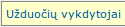
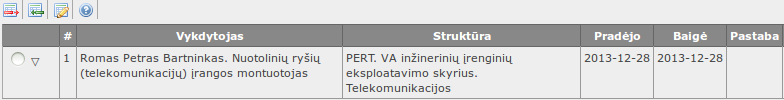
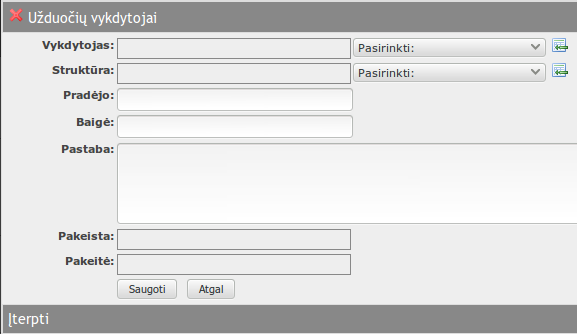
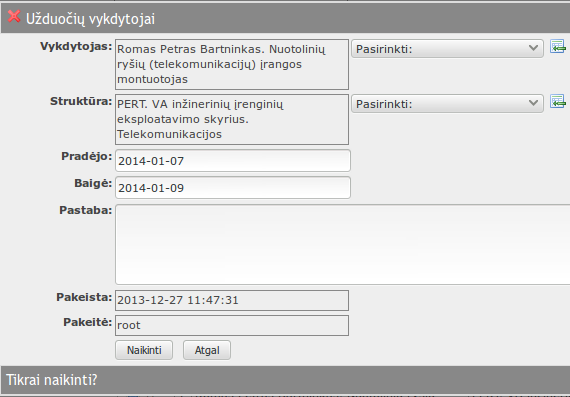

į pradžią Turinys
Užduočių vykdytojai
Užduočių vykdytojų registre įvedami užduoties vykdymui paskirti vykdyti (darbuotojai).
Registras atverčiamas iš užduoties redagavimo formos, pasirinkus skirtuką „Užduočių vykdytojai“.- 
- 
Lentelės rodinyje matyti:
- Vykdytojas – darbuotojo, paskirto užduoties vykdymui vardas, pavardė, pareigos.
- Struktūra – darbuotojo, paskirto užduoties vykdymui padalinys.
- Pradėjo – data, kada darbuotojas pradėjo vykdyti užduotį.
- Baigė – data, kada darbuotojas baigė vykdyti užduotį.
- Pastaba – bet koks tekstas.
- Pakeista – įrašo pakeitimo data, laikas.
- Pakeitė – įrašą pakeitusio naudotojo vardas.
Galima atlikti šiuos veiksmus:
į pradžią TurinysĮterpti naują užduoties vykdytojų įrašą
- Spausti
 lentelės antraštėje.
lentelės antraštėje. - Atsiverčia naujo įrašo įterpimo forma.
- 
- Formoje užpildomi laukeliai:
- Vykdytojas – darbutojo, kuriam paskirta užduotis vardas, pavardė, pareigos. Pasirinkti iš sąrašo. Jeigu sąraše nėra, galima papildyti:
spausti sąrašo dešinėje, užpildyti formą;
- Struktūra – darbutojo, kuriam paskirta užduotis padalinio pavadinimas. Pasirinkti iš sąrašo. Jeigu sąraše nėra, galima papildyti:
spausti sąrašo dešinėje, užpildyti formą;
- Pradėjo – data, kada darbuotojas pradėjo vykdyti užduotį. Jeigu tuščia – data bus tokia pati, kaip įrašo įterpimo data;
- Baigė – data, kada darbuotojas baigė vykdyti užduotį;
- Pastaba – bet koks tekstas. Gali likti tuščia;
- Pakeista – įrašo pakeitimo data, laikas. Užpildomas automatiškai;
- Pakeitė – įrašą pakeitusio naudotojo vardas. Užpildomas automatiškai;
- Vykdytojas – darbutojo, kuriam paskirta užduotis vardas, pavardė, pareigos. Pasirinkti iš sąrašo. Jeigu sąraše nėra, galima papildyti:
spausti
- Paspaudus duomenys išsaugomi, forma užverčiama.
- Paspaudus duomenys neišsaugomi, forma užverčiama.
- Pažymėti norimą redaguoti įrašą.
- Spausti
 lentelės antraštėje.
lentelės antraštėje. - Atsiverčia įrašo redagavimo forma.

- Forma užpildoma taip pat, kaip ir įterpiant įrašą.
- Paspaudus duomenys išsaugomi, forma užverčiama.
- Paspaudus duomenys neišsaugomi, forma užverčiama.
- Pažymėti norimą panaikinti įrašą.
- Spausti
 lentelės antraštėje.
lentelės antraštėje. - Atsiverčia įrašo naikinimo forma.
- 
- Paspaudus įrašas sunaikinamas, forma užverčiama.
- Paspaudus įrašas nesunaikinamas, forma užverčiama.
Redaguoti užduočių vykdytojų įrašą
Naikinti užduoties vykdytojų įrašą